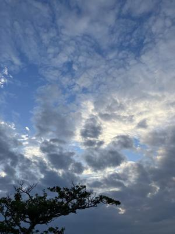
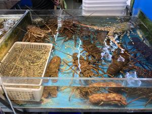
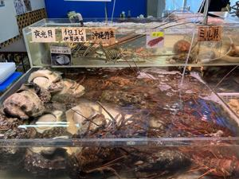
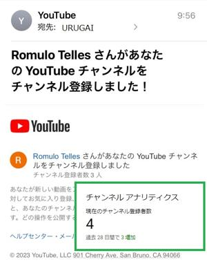

うるがいの話 ある日
最新: ロムロ・テレスさん【うるがいの話 ある日】とは 一日だけのプログです
『うるがいの話』の最新一日だけのプログで、通信料が少なく経済的だ。カニの画像をクリックすると全ての日付が載る『うるがいの話』サイトを表示します
|
|
【うるがいの話】 うるがい(ｳﾙｶﾞｲ urugai)とは、『もずくがに』の名前でとても大きくなります。 |
|---|---|
|
|
【カミマヤーの話】 猫のことを方言でマヤーといいます。カミマヤー（kamimayaa）とは、神の猫のことです。 |
|
【たながぁの音楽】 たながぁ（ﾀﾅｶﾞｰ tanagaa）とは手長えびのことで、何種類かあり大きいのは車 エビぐらいになります。 |

|
【ぶながぁの話】 ぶながぁ(ﾌﾞﾅｶﾞｰ bunagaa)とは、赤い髪の毛、赤い身体、そして身長は１ｍ２０ｃｍ ぐらい、川の蟹を食べているの目撃された。場所は沖縄県国頭郡大宜味村のと ある村僕の隣近所に住んでいる爺さんから、聞いた話です。 |
|
|
【ギーマの話】 ギーマ(giima)とは、山原の里山に咲くスズランに似た、 花を付けます。実は食べられます、 気が付くと口の周りが紫になっています。 |
2023年12月28日 (木）ロムロ・テレスさん
15:42
  
子供が家にきた。あれ、今日は仕事納めではと言うと、今日から休みだよと答
えた。午前中に生命保険の人と、ラインで年末の挨拶メールのやり取りしてい
たのでてっきり、今日まで仕事かなと思っていた。午前中に、とある会社に電
話をしたが取らないので、メールしたものの返信が来なかったのは、もう正月
休みに入ったからか、返信メールは年明けだな、あー恥ずかしい。マ、いいか

小乗仏教ではないが、古典音楽のみのユーチューブのアカウントに Romulo
Tellesさんという名前の人が、チャンネル登録したとメール通知が来た。フム
フム、『Romulo Telles どこの国の人と思われますか』ＡＩに尋ねたら
ロムロ・テレスさんは、ブラジル出身のサッカー選手です。
ホー、鵜吞みにはしないが南米系の人かな、箏に興味がある人かなと暇人は思
うのである。因みに大乗仏教向け（洋楽のカバーなど）のアカウントのチャン
ネル登録者の数はただいま１５人。
１５時３６分 ビットコインの総資産 ￥１７、６５２（↑６０）